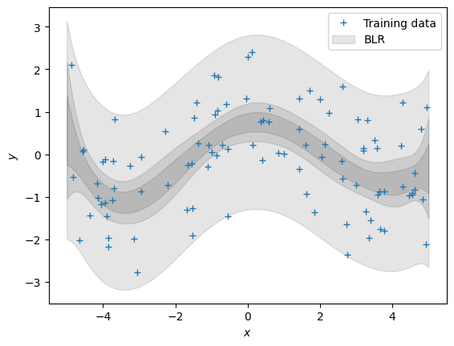

import numpy as np
import pandas as pd
import matplotlib.pyplot as plt
import scipyBaysian Linear Regression
Bayesian Linear Regression
\[ y = \boldsymbol x^T\boldsymbol\theta + \epsilon\,,\quad \epsilon \sim \mathcal N(0, \sigma^2) \] Where $ $ is the noise from normal distribution with variance \(\sigma^2\). Training inputs in \(\mathcal X = \{\boldsymbol x_1, \ldots, \boldsymbol x_N\}\) and corresponding training targets \(\mathcal Y = \{y_1, \ldots, y_N\}\), respectively.
Function
def g(x, sigma):
return np.cos(x) + sigma*np.random.normal(size=(x.shape))We apply non linear feature transformation on feature matrix with polynomial of degree \(P\) \[ \sum_{k=0}^K \theta_k x^k = \boldsymbol \phi(x)^T\boldsymbol\theta\,,\quad \boldsymbol\phi(x)= \begin{bmatrix} x^0\\ x^1\\ \vdots\\ x^K \end{bmatrix}\in\mathbb{R}^{K+1}\,. \] Here, \(\boldsymbol\phi(x)\) is a nonlinear feature transformation of the inputs \(x\in\mathbb{R}\).
Similar to the earlier case we can define a matrix that collects all the feature transformations of the training inputs: \[ \boldsymbol\Phi = \begin{bmatrix} \boldsymbol\phi(x_1) & \boldsymbol\phi(x_2) & \cdots & \boldsymbol\phi(x_n) \end{bmatrix}^T \in\mathbb{R}^{N\times K+1} \]
def poly_features(X, p):
"""Returns a matrix with p columns containing the polynomial features of the input vector X."""
X = X.flatten()
return np.array([1.0*X**i for i in range(p+1)]).TSample to see nonlinear transformation
X = np.array([-3, -1, 0, 1, 3]).reshape(-1,1) # 5x1 vector, N=5, D=1poly_features(X, 3)array([[ 1., -3., 9., -27.],
[ 1., -1., 1., -1.],
[ 1., 0., 0., 0.],
[ 1., 1., 1., 1.],
[ 1., 3., 9., 27.]])Known entities
sigma = 1.0 # standard deviation of the noise
m0 = 0.0 # mean of the prior
S0 = 1.0 # covariance of the prior
p = 6 # order of the polynomial N = 100 # number of data points
X = np.random.uniform(high=5, low=-5, size=(N,1)) # training inputs, size Nx1
y = g(X, sigma) # training targets, size Nx1Posterior
Calculating: \[\begin{align} &\text{Parameter posterior: } p(\boldsymbol\theta|\mathcal X, \mathcal Y) = \mathcal N(\boldsymbol \theta \,|\, Mn,\, Sn) \end{align}\]
def posterior(X, y, p, m0, S0, sigma):
"""Returns the posterior mean and covariance matrix of the weights given the training data."""
poly_X = poly_features(X, p)
SN = scipy.linalg.inv(1.0 * np.eye(p+1) / S0 + 1.0/sigma**2 * poly_X.T @ poly_X)
mN = SN @ (m0 / S0 + (1.0/sigma**2) * poly_X.T @ y)
return mN, SNmN , SN = posterior(X, y, p ,m0, S0, sigma)Ntest = 200
Xtest = np.linspace(-5, 5, Ntest).reshape(-1,1) # test inputs
poly_X_test = poly_features(Xtest, p)Now, let’s make predictions (ignoring the measurement noise). We obtain three predictors: \[\begin{align} &\text{Bayesian: } p(f(\boldsymbol X_{\text{test}})) = \mathcal N(f(\boldsymbol X_{\text{test}}) \,|\, \boldsymbol \phi(X_{\text{test}}) \boldsymbol\theta_{\text{mean}},\, \boldsymbol\phi(X_{\text{test}}) \boldsymbol\theta_{\text{var}} \boldsymbol\phi(X_{\text{test}})^\top) \end{align}\] We already computed all quantities. Write some code that implements all three predictors.
posterior_pred_mean = poly_X_test @ mN
posterior_pred_uncertainty_para = poly_X_test @ SN @ poly_X_test.T
posterior_pred_var = sigma**2 + posterior_pred_uncertainty_para# print(posterior_pred_mean.shape)
# print(posterior_pred_var.shape)# plot the posterior
plt.figure()
plt.plot(X, y, "+")
# plt.plot(Xtest, m_mle_test)
# plt.plot(Xtest, m_map_test)
posterior_pred_mean = posterior_pred_mean.flatten()
var_blr = np.diag(posterior_pred_uncertainty_para)
conf_bound1 = np.sqrt(var_blr).flatten()
plt.fill_between(Xtest.flatten(), posterior_pred_mean + conf_bound1, posterior_pred_mean - conf_bound1, alpha = 0.1, color="k")
conf_bound2 = 2.0*np.sqrt(var_blr).flatten()
plt.fill_between(Xtest.flatten(), posterior_pred_mean + conf_bound2, posterior_pred_mean - conf_bound2, alpha = 0.1, color="k")
conf_bound3 = 2.0*np.sqrt(var_blr + sigma).flatten()
plt.fill_between(Xtest.flatten(), posterior_pred_mean + conf_bound3, posterior_pred_mean - conf_bound3, alpha = 0.1, color="k")
plt.legend(["Training data","BLR"])
plt.xlabel('$x$');
plt.ylabel('$y$');